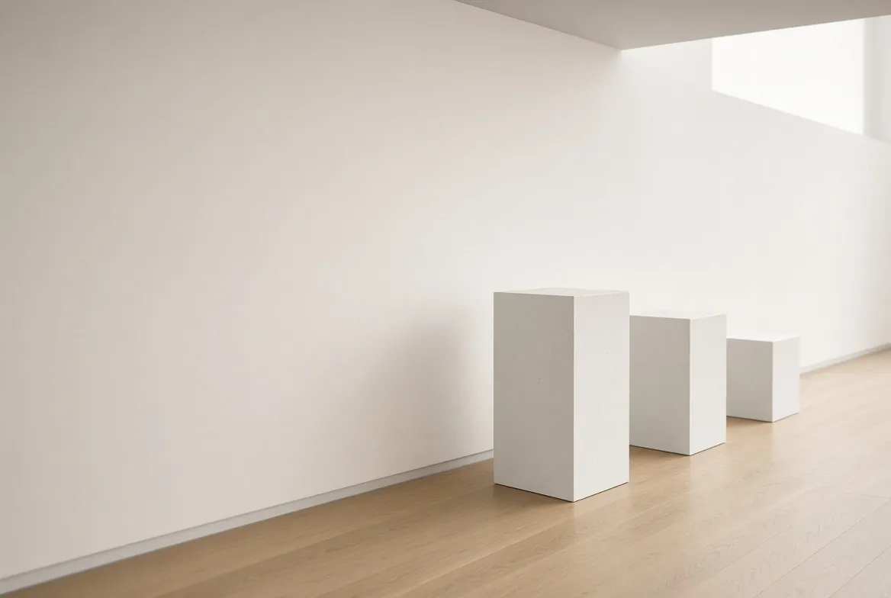

Pierre Becq · Antiques
Gallery
A selection of our works of art, shown in three rooms, from the 17th to the 20th century.
14 pieces · Price on request

Period
Type
14 pieces
Room I
17th – 18th centuries
Sainte-Lucie wood, stamped seats, sacred art. 7 pieces

01 / 07Christ in Sainte-Lucie woodEarly 18th century, late Louis XIV periodSainte-Lucie wood, known as Bagard woodPrice on requestAvailable

02 / 07Casket in Sainte-Lucie wood18th centurySainte-Lucie wood (cherry)Price on requestAvailable

03 / 07Armchair with removable seat, stamped Cresson l’aîné18th centuryBeechPrice on requestAvailable

04 / 07Paperolle reliquary18th centuryPaperolles (rolled paper), period giltwood framePrice on requestAvailable

05 / 07Round box in Sainte-Lucie woodLate 17th centurySainte-Lucie woodPrice on requestAvailable

06 / 07Armchair, Louis Cresson18th centuryBeech, 18th-century Aubusson tapestryPrice on requestAvailable

07 / 07Louis XV cabriolet armchair18th centuryBeechPrice on requestAvailable
No piece in this room matches the filter.
Room II
Consulate, Empire, 19th century
Gilt bronze, clocks, terracotta. 3 pieces
Room III
Around 1900 and the 20th century
Glass, ceramics, metal, painting. 4 pieces

01 / 04Wall light by Jean ProuvéCirca 1925Hammered sheet steel, frosted glassPrice on requestAvailable

02 / 04Daum Nancy vaseArt Nouveau period (1900)Multi-layered glass, acid-etched, wheel-finished and hammeredPrice on requestAvailable

03 / 04Ceramic vase, Jaget et PinonEarly 20th centuryCeramic, Sèvres-blue glazePrice on requestAvailable

04 / 04Painting, “May the Sun Always Shine”1985Oil on canvasPrice on requestAvailable
No piece in this room matches the filter.
Looking for a piece, or wishing to sell one?
Our stock goes beyond this selection. Write to us or visit rue Gambetta.
Write to us